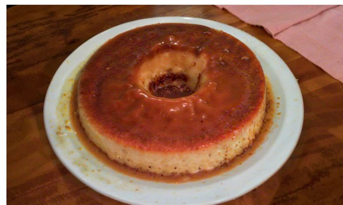

RECEITAS DO PAULO

Aquela receita que ninguém dispensa: veja como fazer pudim de leite condensado simples e rápido, em um passo a passo de apenas 40 minutos. Contando com apenas 5 ingredientes, essa receita de pudim de leite consensado é sucesso garantido!
Ingredientes (20 porções)
Massa
1 lata de leite condensado
1 xicara de leite de vaca
4 ovos inteiros
Calda
1 xicara (chá) de açucar
1/3 de xicara (chá) de água
Modo de preparo: 40 minutos
1-Calda
Em uma panela, misture a água e o açúcar até formar uma calda.
2-Unte uma forma com a calda e reserve.
3-Massa
Bata todos os ingredientes no liquidificador e despeje na forma caramelizada.
4-Leve para assar em banho-maria por 40 minutos.
5-Desenforme e sirva.
Informações adicionais Dicas para fazer a melhor receita de pudim de leite condensado
Para a calda da sua receita de pudim de leite condensado dar certo, fique sempre com a proporção de meia medida de água para uma medida de açúcar. Por exemplo, se você utilizar 1 xícara de chá de açúcar, a medida de água será de apenas 1/2 xícara (chá). Se você fizer um pudim maior, pode usar 2 xícaras (chá) de açúcar para 1 xícara de água. Seguindo essa dica, não tem erro! Confira duas dicas para garantir que ele fique bem lisinho:
1) Quando for colocar a massa do pudim na forma, use uma peneira;
2) Nunca asse o pudim de leite condensado em forno alto e tampe-o com papel-alumínio.
Muitas outras variações da receita de pudim
Para surpreender a família, você pode apostar no sabor superdiferente do pudim de doce de leite ou do pudim de tapioca. Já para aqueles que gostam de rapidez e praticidade na cozinha o pudim de geladeira e o pudim de microondas são ótimas versões da receita clássica. Outras formas bem brasileiras de variar o sabor do pudim são pudim de pão de liquidificador, pudim de leite ninho e pudim de chocolate.
1. Salada de lentilha com couve-flor — Fresca, nutritiva e perfeita para começar a noite. 2. Salpicão de frango com iogurte — Uma versão mais leve e cremosa do clássico favorito das festas. 3. Peru com limão e ervas — Aves assadas suculentas com toque cítrico e aromático. 4. Frango assado de Natal (laranja, mel e alecrim) — Alternativa saborosa e agridoce para o prato principal. 5. Lombo assado com tomate e ervas — Carne macia e cheia de sabor para a mesa central. 6. Arroz vermelho festivo (cebola, amêndoas e figos) — Um acompanhamento elegante, colorido e com texturas marcantes. 7. Farofa de milho com cenoura e bacon — Pronta em cerca de 30 minutos, crocante e indispensável. 8. Rabanada de pão de forma — A sobremesa tradicional de Natal, dourada por fora e macia por dentro. 9. Panetone recheado com sorvete — Uma forma moderna e refrescante de servir o símbolo natalino. 10. Pudim de leite sem furinhos — A sobremesa clássica com textura lisa e aveludada.